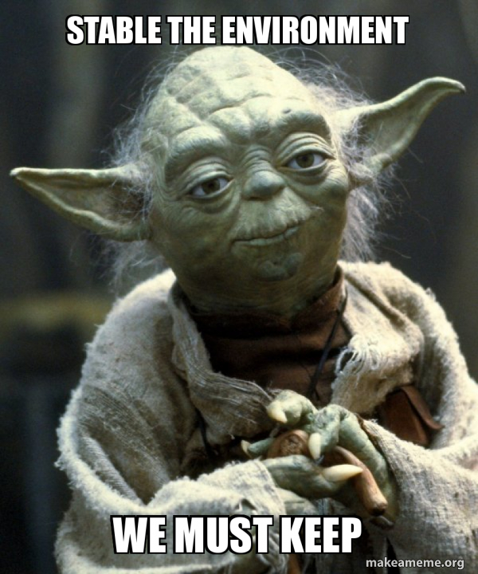

Introduction
I am writing this blog to share what I learned from different sources and present it in a way that I didn't find anywhere else. I finally understood what Karpathy meant when he said I like to read code more than papers – "code is the source of truth".
What is RL?
Most people explain it with an example of a pet that gets rewards when they do good things. In other words, it's a process of learning actions that get rewards and eventually gets the job done. But with DQN, I think it's easier to understand that DQN isn't about teaching actions that get more rewards. Rather, it's an algorithm that learns what rewards every action gets, and then we prioritize maximizing the rewarding actions in part 2.
Bellman Equation
Starting with the Bellman equation - as I said above, what do we need? We need to know how much reward each action gets with the current given state. Later we start focusing on maximizing the reward.
Let's take state S and action a. Now our policy/model is trying to predict that at a given state, using the current policy (itself), what would be the reward if we take all the actions that maximize the rewards.
Q(s,a) = total rewards if policy Q is used and all the actions are taken in a way that Q predicted to be most rewarding.Q(s,a) = R₀
After it takes the first action, S becomes S1 and a becomes a1, and we got reward from the previous action R0:
Q(s,a) = R₀ + Q(S₁,a₁)
For mathematical stability and practical use cases:
Q(s,a) = R₀ + γ (Q(S₁,a₁))
Where γ is the discount factor. Think about how we consider immediate actions and rewards in real life a bit more seriously than later ones. We want to focus more on current rewards, hence we use a discount factor for later rewards. Or you can make γ as 1 to make them equal priority or 0 to make them no priority.
This discount factor reflects how we typically value immediate rewards more than future ones. The complete sequence looks like:
=> Q(s,a) = R₀ + γ(future_rewards)
=> future_rewards = R₁ + γ(more_future_rewards)
=> Q(s,a) = R₀ + γ(R₁ + γ(R₂ + ...))
As I said above, we want the policy to learn to maximize the rewards as well, so we can express it as:
Q(s,a) = R₀ + γ × max[Q(s',a')]
And this becomes our Bellman equation. This was my way of explaining it intuitively - please refer to other resources for correct mathematical derivation and equations.
Taking It Further: Q Learning
Q(s,a) = total rewards if policy Q is used and all actions are taken in a way that Q predicted to be most rewarding.
Looking at this again and modifying it for DQN:
Q policy takes state and action and learns what actions at this state will get how much total rewards.
Let's fix the amount of actions - say 3.
Now our Q policy will predict maximum rewards at current state S for all 3 actions:
Q → [total_max_rewards_a₁, total_max_rewards_a₂, total_max_rewards_a₃]
Neural Network Architecture
First, why neural networks? In simple environments, we could create a table with every possible state and its rewards (It's called Q-learning where this Algo comes from). But in real-world problems, like playing Atari games, we have way too many possible states storing billions of them is not feasible. This is where neural networks come in - they can approximate Q-values even for states they've never seen before.
Let's break down the network structure:
The input layer takes our state. This could be:
- Raw pixels from a game screen
- Sensor readings from a robot
- Any other information that describes our current situation
Then we have some hidden layers (they're just doing their neural network magic here - the great-dian descent ), and finally, we reach the interesting part - the output layer.
The output layer is simple - it has one neuron for each possible action, and each neuron predicts the total future reward for taking that action. This is exactly how DQN implements Q-learning - the neural network outputs a value for each possible action. It makes action selection straightforward (just pick the action with highest predicted reward) and it's computationally efficient (one forward pass gives us Q-values for all actions).
Training Process Flow
I want to walk you through how DQN actually learns, step by step. Let’s fit the pieces together:
- We start with our current state (like a game screen or sensor readings)
- Our agent needs to pick an action. Remember that epsilon thing I mentioned? Here's where we use it:
- Generate a random number between 0 and 1
- If it's less than epsilon, pick a random action (exploration)
- If it's greater than epsilon, pick the action our network thinks is best (exploitation)
- We take this action in our environment and get two things:
- An immediate reward (could be points in a game, or even negative for mistakes)
- The next state we end up in
- We store this whole experience (current state, action, reward, next state) in our replay buffer
- Here's where it gets interesting - we don't learn from just this experience
- We grab a batch of random experiences from our buffer
- This gives us more stable learning (I'll explain why in implementation details)
- Now for each experience in our batch, we calculate the loss using our Bellman equation
- Every few steps, we update our target network (remember that freezing trick I mentioned?)
Math Behind Training
I want to explain how our policy learns to predict better rewards.
Q → [total_max_rewards_a₁, total_max_rewards_a₂, total_max_rewards_a₃]
We took action based on whatever the max reward was according to policy (let's assume a3 has best predicted rewards). We take action a3 on our environment and get some immediate reward R.
Now since we actually don't know what is the target R that we're chasing (since unlike deep learning we don’t know what the ideal result looks like), we try to estimate it using the Bellman equation:
Q(s,a) = R₀ + γ × max[Q(s',a')]
becomes:
target_value = R + γ * max(Q(next_state))
Hence the loss becomes:
loss = (target_value - predicted_Q)²
There's one issue - if we keep changing our target at each step, it becomes unstable for learning. So we use a trick: we freeze the Q policy every few steps and then use that to calculate target value.
target_value = R + γ * max(Q_target(s')) loss = (target_value - Q_current(s,a))²
Or combined in one equation:
loss = (R + γ * max(Q_target(s')) - Q_current(s,a))²
That gives us our original equation:
Lₐ(θᵢ) = E[(r + γ * max(Q(s', a'; θ⁻)) - Q(s, a; θᵢ))²]
Implementation Details
I want to share some practical details for implementing DQN..
Why do we use batch training? ?(same reason we use it everytime) Imagine trying to learn from just one experience at a time (puff! Humans) - By training on batches:
- Our updates become more stable (less affected by one weird experience)
- We can use modern GPUs efficiently (they love parallel processing)
- We get a better estimate of which direction to update our network
Typical batch size? 32 or 64 work well for most problems. Too small and learning is unstable, too large and training becomes slow.
About that target network update - this is important. While some implementations do hard updates every few hundred steps, soft updates are really the way to go. Here's why: instead of suddenly copying all weights from our current network to target network (which can cause instability), we slowly blend them.
target_network = τ * current_network + (1 - τ) * target_network
Where τ is something like 0.001 so we update target with 0.001 of current update network. The idea is it will eventually add up.
Are we stable?
A few other numbers: - Replay buffer size: Usually 100,000 experiences (depends on your memory constraints) - Learning rate: Start with 0.001 (the classic default) - Epsilon: Start at 1.0 and decay to 0.01 over training - Discount factor (gamma): 0.99 should works for most problems
Experience Replay Buffer
Think about how our agent learns - it takes an action, gets a reward, moves to a new state, and learns from this experience. But here's the thing - if we only learn from recent experiences, our network might forget important things it learned before, or worse, get stuck learning only from very similar experiences.(Not for humans, you stay in the present)
This is where experience replay comes in. Every time our agent does something, we store a complete memory of that experience as a tuple:
(current_state, action_taken, reward_received, next_state)
We keep collecting these memories in what we call a replay buffer. Now, instead of just learning from what just happened, we randomly pick experiences from this buffer and learn from them again. It's like our agent is dreaming about past experiences.(Intense nightmare of not waking up in math exam).
Why is this random sampling so important? In real life, consecutive experiences are usually very similar - imagine your agent exploring one part of the game map. If we only learned from consecutive experiences, our network might overfit to that specific situation. Random sampling breaks these temporal correlations and gives us a more diverse learning experience.
This approach has three big benefits: 1. Our agent can learn from rare but important experiences multiple times 2. Random sampling makes the training data more independent 3. We can learn from successful experiences even after we've moved on to explore different strategies
Now here's a caveat - even with experience replay, our agent still just learns which actions give maximum rewards for states. What will happen is once it knows some actions at some state will give rewards, it will become lazy (aka stuck in local minima).
That's why we take a value Epsilon with high value initially and decrease it linearly. The idea is that Epsilon amount of time we ignore the max reward and choose action at random for exploration.
Conclusion
I hope this take on DQL is better stepping stone before you jump to paper or code.